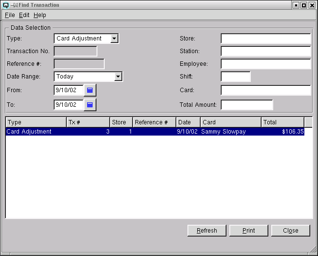
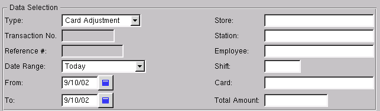
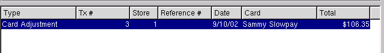

Find Transaction
The find window provides the ability to find any transaction or group
of transactions very easily and quickly. Choose a transaction type and
make your data selection. Follow by clicking on "Refresh" at the
bottom of the window.

Data Selection
Enter the data that will be used to select the transaction(s). Note
the data selection will change slighly dependant on the transaction
type selected.

-
- Type - Select the type of transaction(s) that you wish to find.
-
- All Types - Displays all transaction types
- Journal Entry - Displays transactions created by
general journal entries.
- Ledger Transfer - Displays transactions created by
transfering account amounts from one store to one or more
stores.
- Cheque - Displays cheque transactions created from
writing a cheque.
- Adjustment - Displays transactions created from
item adjustments.
- Item transfer - Displays transactions created by item
transfers from one store to another.
- Customer Invoice - Displays transactions created by
customer invoices.
- Customer Return - Displays transactions created by
customer returns.
- Customer Payment - Displays transactions created by a
customer payment.
- Vendor Invoice - Displays transactions created by a
vendor invoice.
- Vendor Claim - Displays transactions created by a
vendor claims.
- Withdraw - Displays transactions created by cash
withdrawls from a customer account.
- Payout - Displays transactions created at the point-of-sale
for the purpose of paying expenses using cash.
- Nosale - Displays nosale transactions created at the
point-of-sale.
- Shift Close - Displays transactions created by the closing
of a shift.
- Id No. - Enter the id number of a journal entry
transaction.
- Transfer No - Enter the id of the ledger or item transfer.
- Check No - Enter the check number of the check.
- Adjustment No - Enter the adjustment number for an
inventory adjustment transaction.
- Invoice No - Enter the customer invoice or vendor invoice
number.
- Receipt No - Enter the receipt number for a customer payment.
- Reference # - Enter the reference number of the
transaction. For example, the vendor's invoice number or the
customer's purchase order number.
- Date Range - Select the date range for the transaction(s).
- From - Enter the starting date for a date range.
- To - Enter the ending date for a date range.
- Store - Select a store to find. If left blank data for all stores
will be displayed.
- Station - Select a work station or point-of-sale device to
find. If left blank data for all stations will be displayed.
- Employee - Select only transactions created by a specific
employee to find. If left blank data for all employees will be displayed.
- Shift - Select only transactions created by a specific
shift to find. If left blank data for all shifts will be displayed.
- Card - Enter the card id to find. If left blank data for
all cards will be displayed.
- Customer - Enter the customer to find. If left blank all
customers will be displayed.
- Vendor - Enter the vendor to find. If left blank all
vendors will be displayed.
- Total Amount - Enter the total amount of the transaction
to find.
Find Table
The find table displays the details about the transactions you
find. You can view an actual transaction by double clicking on the
appropriate line in the table.

-
- Type - the type of transaction
- Tx # - the transaction id number
- Store - the store number in which the transaction was created
- Reference - displays the reference number such as a
purchase order or vendor invoice number
- Date - the date of the transaction.
- Card - the id of the card, customer or vendor
- Total - the total amount of the transaction.
Refresh
Clicking on refresh will refresh the data on the screen.
Print
Select this function to print the find screen to the printer.